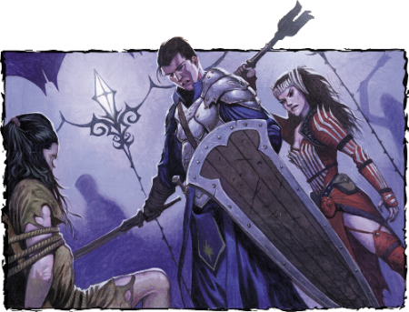

Week 15 - The Hall of Deception. A traitor revealed.
Another great week! I nearly managed to kill both Tom and flash! A bittersweet achievement, as both were only possible because the players forgot key info about their characters. Steve forgot Tom's ring of Feather Falling, and Andrew forgot half a dozen clever-arsed things that flash can do to get out of a jam. In our group, we don't rewind the round if someone forgets something like this, otherwise every damn fight would take all night.
Commiserations to Chris, who was out with back pain again this week. It sucks being sick. Steve played Arn on the night.
And in other news, someone got The GIMP going on Leopard. Yay! I don't know if it was the new version of the gimp or the new version of X, but I am back in business.
The party do not recognise the name Cyra ir’Tarn, so they handle her by showing her the door by which they entered the cell block and leaving her to it. They do the same for the madman. They then elect to investigate what's behind the double doors.

The party metagame fairly deduce that this is some sort of trap room put in place by the doppelgangers, and that the entrance to the room on their right is behind the far corner. There is some discussion of getting Jericho to traverse the slippery wooden planks over the spiky water, but in the end they take the easy (and more sensible) route. “Tom, make a door.” Tom obliges, and in a jiff they have a new door into the water-filled pit room.
The party look down into the pit, and decide to clean out the rest of the warehouse first. No sense leaving potential treasure enemies at your back.
The party ascends the stairs and opens the door at the top. They see that they are standing at then end of a 15' high catwalk, below which is a warehouse. Interestingly, the other side of the door is cunningly concealed. Also interestingly, there is a door below them that does not correspond to anything on the other side of the wall. Tom elects to leap down and investigate.
OMG! OMG! Tom jumps down to the square in front of the fake door! This is the bit where we forgot his Ring of Feather Falling.
He lands squarely onto a pit trap, at the bottom of which are a number of spikes, hurting himself very badly. The party elect to stay at the top of the catwalk, deploying their Rope of Climbing to get Tom out. Tom climbs out and moves away from the pit, and is immediately set upon by a Mimic.
I shouldn't laugh, I shouldn't chortle with glee. But I did. Jesus forgive me, I laughed like a maniac.
At this point, the party decide that they should help. Arn bounces down onto a crate, then onto the floor. The Mimic has grappled Tom, and he has stuck fast to its glue. Arn attacks with his axe, but is quick enough to snatch the axe back before it also sticks. I think spells might have been flung, and Tom is almost unconscious from his injuries. Eventually, they put the Mimic down. Frith does some healing, and in the process notes that one of the other crates is suspicious. The party elect to talk to it.
The MM states clearly that Mimics speak Common and will negotiate. But they are aberrations and don't necessarily think the way we do. I'm not ashamed to admit it - this quickly got really weird.
The Mimic, knowing itself to be discovered and overmatched, replies to the party. It does not know a great deal about the complex - its job is simply to guard this room. There is some stuff about "You killed my wife!", and suggestions that some of the smaller barrels in the room might be the Mimics' children. The party (I think) eventually order it off, and then fall to arguing among themselves. Frith wants to let it go, even though it is an offence against nature, because he is a very mellow dude. The fighters want to kill it. Eventually, flash drops a magic missile into it. The Mimic flees - heading for the door as fast as it's multitude of Pratchettesqe feet will carry it (10'). Tom throws his hammer at the Mimic, and it sticks. Frith fires off a Calm Emotions, but flash resists the mellow. Tom retrieves his hammer from the Mimic. There's some more spell flinging but I think the party kill this one too. The bastards.
So anyway. The party investigate the two other rooms. One is an abandoned office. Sweeping it with a Detect Magic, they discover a ring decorated with what appear to be fish scales. The other room simply contains a ladder up onto the catwalk. Jericho attempts to climb it, but it collapses. However, he's quick enough to take no hurt.
The party decide to head back to the room with the shaft.
Entering the room via its new door, the party examine the shaft again. There is a rope ladder leading down to water, and a large barrel bobbing on the surface of the water. The party nominate Jericho to go down and have a look - using their Rope of Climbing as they simply don't trust the ladders in this place. Jericho can see that the shaft extends down and that there is an opening to the side, and so he swims downward. Amazingly, he finds that he can swim far, far better than he is accustomed to and concludes that the ring with the fish scale pattern is in facts Ring of Swimming.
He finds that the opening to the side leads to a short passage and thence to a large chamber, with the surface of the water (and air) visible above. He breaks the surface, looks around, and heads back to inform the party. The party follow without incident, and find themselves in the Water Control Chamber, standing on a pillar with a lever on it. Leaving the lever alone, they head over a walkway to the door in the south wall.
Beyond that door is a short corridor opening onto a wider passage leading east and west. There are double doors at each end and a series of doors on the south wall. The north wall also has a door, behind which is a toilet.
They check the double doors at the west end. Behind them is what seems to be a planning room. There are maps of Sharn on the walls, and tables on which are documents in piles. The party are tempted to investigate, but a thorough investigation would take hours. And so instead they elect to investigate the doors on the southern wall of the corridor.
Jericho manages to get the westernmost door open. Inside are two Doppelgangers, and it's on.
The doppelgangers raise an alarm, and two of the other doors open. There are now six doppelgangers in the fight.
Yeah, I know. Six doppelgangers vs. Tom and Arn is a hideous mismatch, but there you go.
After the party manage to slay four of them in a round or two, the remaining two bolt for the fourth door in the south wall. The party pursue ... but the room is empty! After a search, the party determine that one of the walls is simply illusionary. Behind it is a door. The party go through the door and, well, things get complicated.
They stand in an octagonal room. Before them are four chairs in each of which sits a bound figure. The figures are - themselves! Or convincing replicas thereof. All except Tom, who is far too ugly for a doppelganger to be able to mimic. Each of the four begins calling, claiming to be the real Flash, Frith, Arn and Jericho, and struggling to escape their bonds
... meanwhile ...
Two or three days ago, the party settled in to the Crooked House and went their separate ways during the day - exploring Sharn, shopping and whatever. It was during this time that one of them was taken captive. That one had no idea until this moment that his friends - likewise bound - might not be who they seemed.
As always, this is as best I can recall it, but I inevitably miss things or get them out of sequence
Arn-II and Frith-II escape their bonds. Arn-I attacks his doppelganger. Tom is confused. flash-I changes form into a hot looking dwarf chick, hoping that the party will get the reference - the form that he assumed to taunt Arn several days ago. Some in the party are suspicious of Frith, who wanted to spare the Mimic, whereas Frith is suspicious of Jericho. Frith does his usual trick and casts Sanctuary. Frith-II approaches flash and Jericho.
Then it happens. Taking advantage of the flanking provided by Frith-II, Jericho attacks flash - backstabbing - and reveals himself to be the traitor. He attempts to use Jericho's necklace of Missiles, but flash's spell makes him hesitate. So he strikes flash again, dropping him into unconsciousness. flash is in danger of bleeding out and dying, but that heroic reserve of heroism that the gods grant only to PCs comes into play, and he stabilizes.
Meanwhile, Arn has dealt with his duplicate which upon death changes to its natural form. Tom is still not %100 about what is going on, but decides to follow Arn's lead. Arn is a bit brighter, and manages to figure out who is who. flash-II escapes his bonds, but Arn and Tom deal with him. Jericho-II - the real Jericho - is still struggling. Jericho-I and Frith-II badly - badly - want to finish off flash, but the players manage to convince them that as flash is disabled and unconscious, it would be wiser to turn their attention to the other party members.
The party deal with Jericho-I, who is tough and has all Jericho's gear. They mop up. It turns out that the real Jericho's manacles are quite sturdy and difficult to open, whereas all the others look real but are build to fall apart with relative ease. They take stock.
They are badly down on spells and resources, and face a dilemma. Staying is a bad idea - the next encounter might be fatal. But if they leave, what happens in the meantime? A spellcaster needs 8 hours of rest to recuperate spells - time during which their enemies might organise a counterattack.
Oh - one more thing. Those two doppelgangers that fled the party and ran through this room? Jericho saw where they went: through a secret door in the back of the octagon.
Well! What will the party do? If they stay, will they have their asses handed to them by the BBEG? If they leave, what will the BBEG do? He can't just hang around and let the party clean up his minions a bit at a time. And why oh why is this nest of doppelgangers interested in the party at all? Surely there's a reason for it all! Anyway. Next week could get unpleasant. For the characters, that is, not for me.